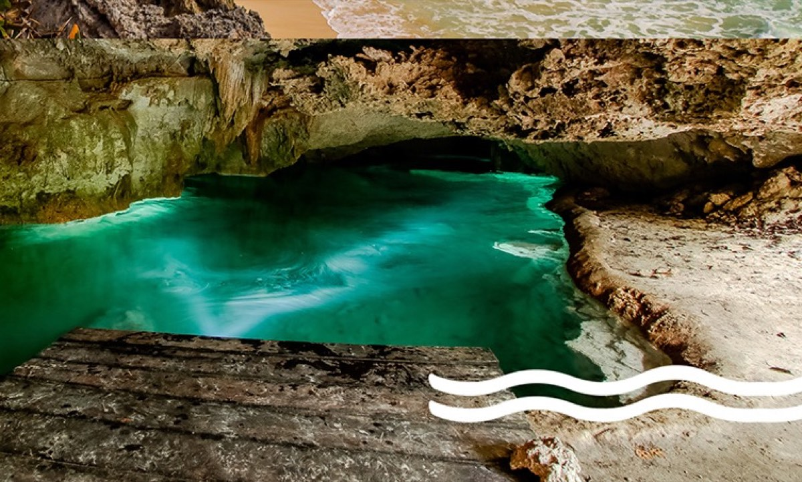
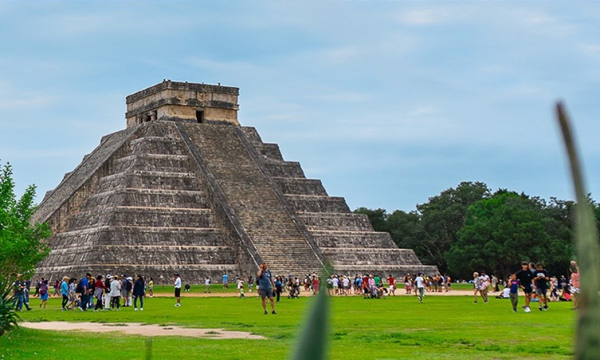
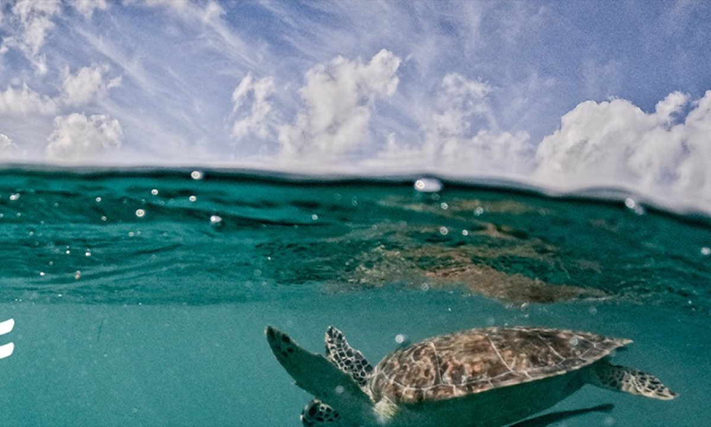
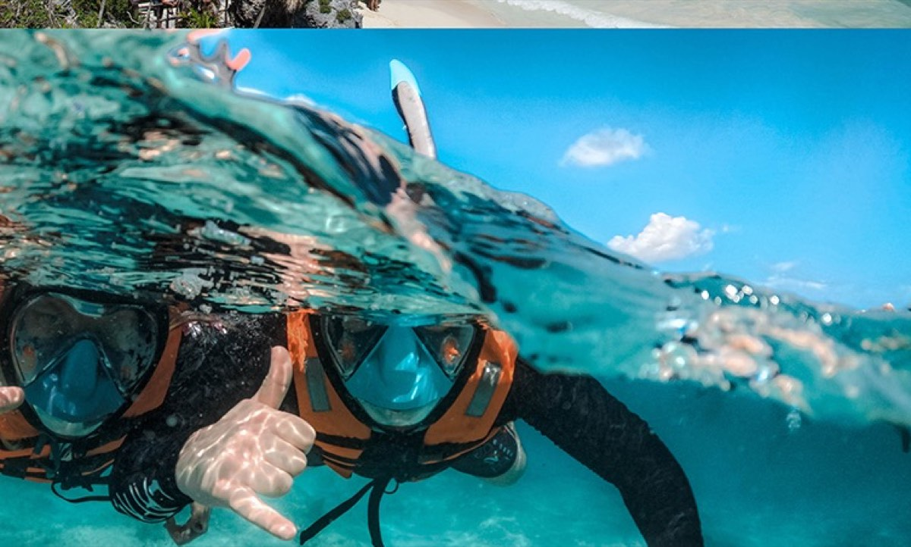
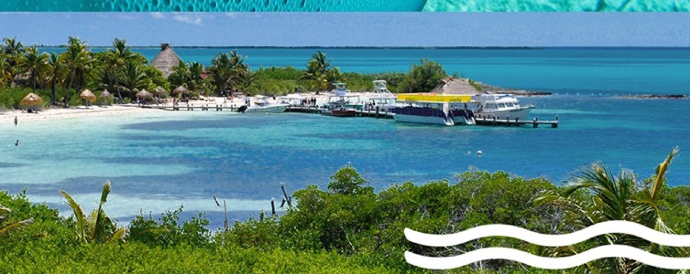
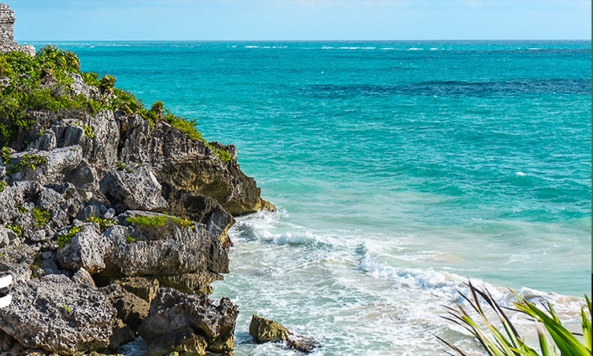
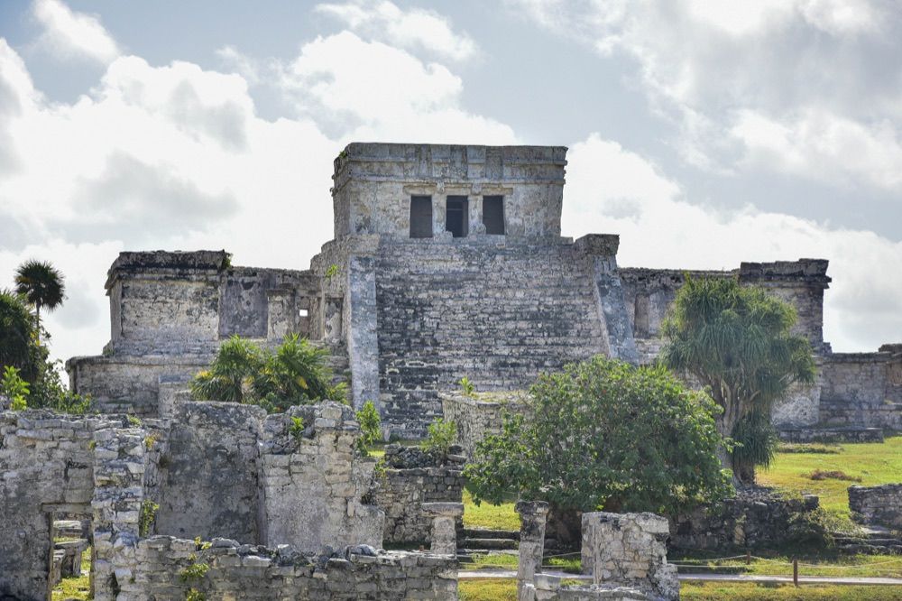
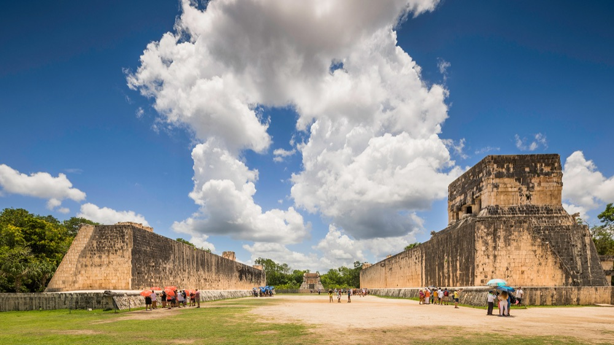
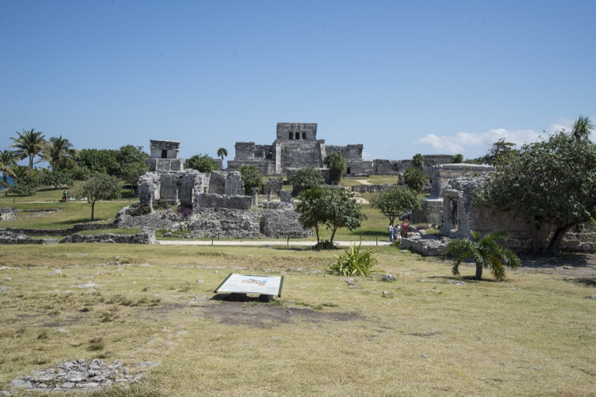

Tulum
Tulum & Cenote
- Tulum ruins by the sea
- Cenote swim and snorkel
- A/C transportation included
- + $20 USD pier fee, adult, cash on boarding · kids free
Cenotes, Tulum, Chichén Itzá, snorkel with turtles, Isla Mujeres and jungle adventures. We tailor by days and budget.
Whale sharks only visit this part of the Mexican Caribbean during summer. That's why the season runs just over three and a half months a year.
Swim next to the biggest fish in the world. Sighting guaranteed: if we don't find them, you get a partial refund, a new date or an open certificate to come back. Full-day trip with reef snorkeling and a ceviche lunch at Playa Norte, Isla Mujeres.
Dock tax not included: $25 USD per adult or child, cash on boarding. Infants 0–3 exempt (Marina Federal & Ecotax).
Hotel pickup ~5:00–7:20 AM · back ~2:30 PM. Not suitable for pregnant women or guests with heart/respiratory conditions or without basic swimming skills.
Local tours · From Playa del Carmen
Our most-booked tours. Ask us about private departures, group rates and combos.






Don't see your ideal tour?
We work with the best operators in Riviera Maya. If you can imagine it, we'll arrange it.
Request a custom tourFrequently asked questions
The Chichén Itzá Classic tour costs from $2,498 MXN per adult and $1,572 MXN per child, including round-trip transportation, the archaeological site, a cenote, and a stop in Valladolid. Message us on WhatsApp to quote your dates and group size.
Yes. Tulum & Cenote, Tulum, Akumal & Cenote, Chichén Itzá Classic, and Full Adventure Discovery all include swimming or snorkeling in a cenote.
Yes, the Paradise Island tour includes round-trip transportation from Playa del Carmen, food and drinks, with snorkeling at Isla Contoy and free time on Isla Mujeres.
Message us on WhatsApp with the tour you want, your date, and group size. We'll quote you right away and confirm your spot.

Archaeology · Cenotes
Explore the Tulum ruins overlooking the Caribbean Sea, then swim and snorkel in crystal-clear cenotes hidden in the Mayan jungle.
At your hotel lobby. This tour only operates in the Riviera Maya zone, roughly from Tulum to Moon Palace.
The guide speaks Spanish and English every day the tour runs.
Kids 4 to 11 pay the child rate; under 4 are free.

World Wonder · Full day
Explore Chichén Itzá, one of the New Seven Wonders of the World. Enjoy a hacienda with a crystal-clear cenote, pools, traditional cuisine, and finish the day in the colonial town of Valladolid.
At your hotel lobby. This tour only operates in the Riviera Maya zone, roughly from Tulum to Moon Palace.
It's the longest tour: pickup between 5:00 and 7:00 am with a late-afternoon or evening return.
The guide speaks Spanish and English every day the tour runs.
Sea turtles · Half day
Snorkel Akumal Bay in search of 3 of the world's 7 sea turtle species along the coral reef. Then explore a crystal-clear cenote surrounded by stalactites and stalagmites.
Akumal Bay is their home and the tour searches for them there, but they're wild animals, so sightings can't be guaranteed 100%.
Yes, it's a half-day tour and you're back at your hotel by around 1:00 pm.
The guide speaks Spanish and English every day.

3 experiences in 1 day
Explore the Tulum ruins overlooking the Caribbean Sea, swim with sea turtles in Akumal, and discover crystal-clear cenotes hidden in the Mayan jungle.
Yes, admission fees, a home-style meal and drinks (water and flavored waters) are all included.
At your hotel lobby, between 6:00 and 8:30 am depending on your area.
The guide speaks Spanish and English every day.
Contoy Island · Isla Mujeres
Visit Contoy, the last unspoiled island of the Mexican Caribbean, where no one lives. Snorkel one of the largest coral reefs in the world, enjoy a meal cooked on the spot by the crew, and finish with free time in Isla Mujeres.
A light breakfast at the pier and a meal on the island: tikinxic fish, grilled chicken, rice, salad, chips and salsas, with soft drinks and beer.
Yes, there's an optional guided walk; it's a protected nature reserve.
Reef snorkeling depends on the weather; the captain makes the call for safety.
Tulum · Reef · Cenotes
Explore the Tulum ruins overlooking the Caribbean Sea, snorkel the coral reef, and swim in crystal-clear cenotes hidden in the Mayan jungle. Three adventures in one day.
It's a full day with 3 activities; kids 4 to 11 are welcome and pay the child rate.
Monday through Saturday; it doesn't operate on Sunday.
The guide speaks Spanish and English every day the tour runs.